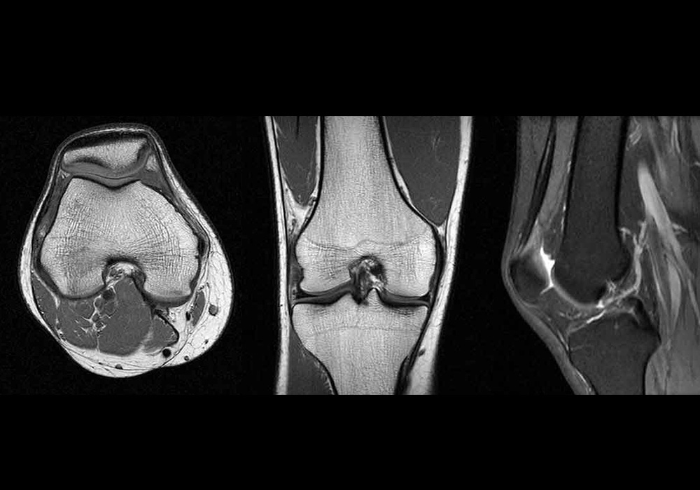

In modern radiology, doctors rely on CT, MRI, and other scans to spot subtle abnormalities. While fully automated AI tools can segment organs or lesions at scale, they sometimes struggle with fuzzy boundaries or rare pathologies.
Interactive segmentation bridges the gap by letting physicians guide the algorithm—clicking or marking key regions—combining AI speed with clinical expertise for higher accuracy and faster decision‐making.
